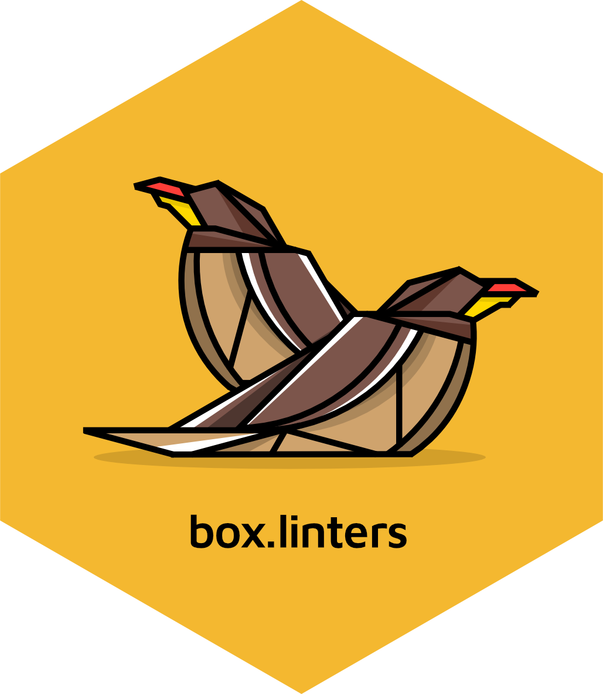

Running lintr with box.linters on a rhino project
Source:vignettes/how-to/rhino-default.Rmd
rhino-default.RmdRhino (>= 1.8.0)
Projects created with rhino version 1.8.0 and later come
preconfigured with a .lintr file.
Using box.linters with an existing Rhino (< 1.8.0)
project
Refer to the Rhino 1.8 Migration Guide to upgrade to the latest version.
The following code is used to setup your .lintr config
file.
box.linters::use_box_lintr(type = "rhino")Active box-compatible linters for
rhino
All linter functions included in the box.linters package
are activated for Rhino projects. Please refer to the Rhino
style guide for more information.
Linting a Rhino project
Use the helper function included in the rhino package to
lint your Rhino project.
rhino::lint_r()